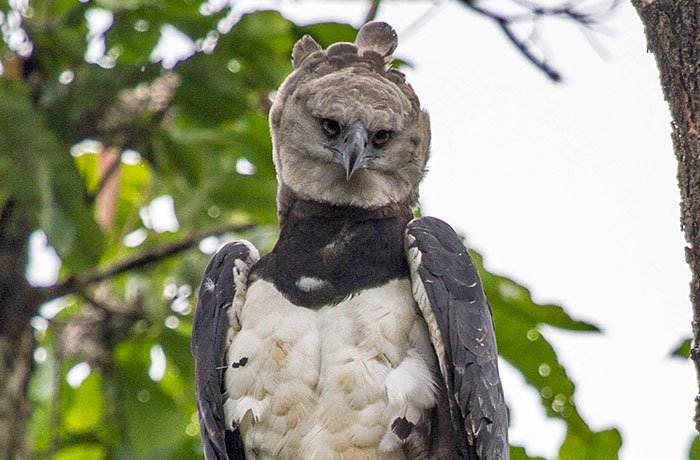
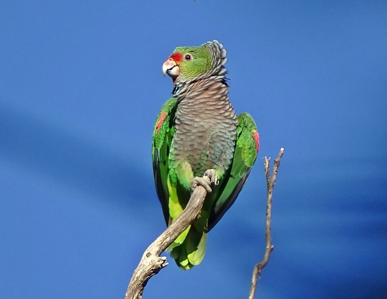
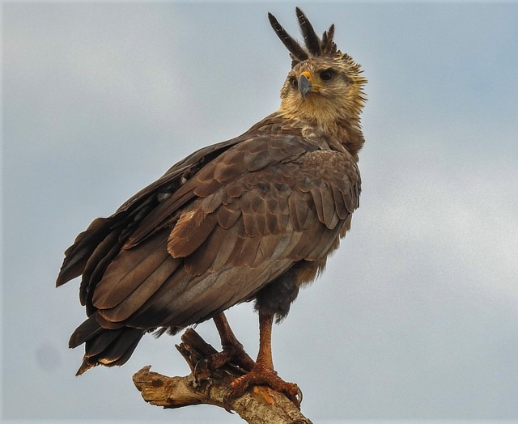
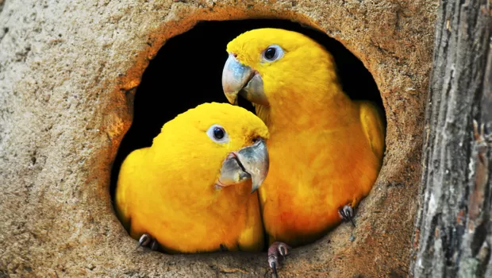
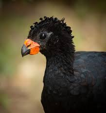
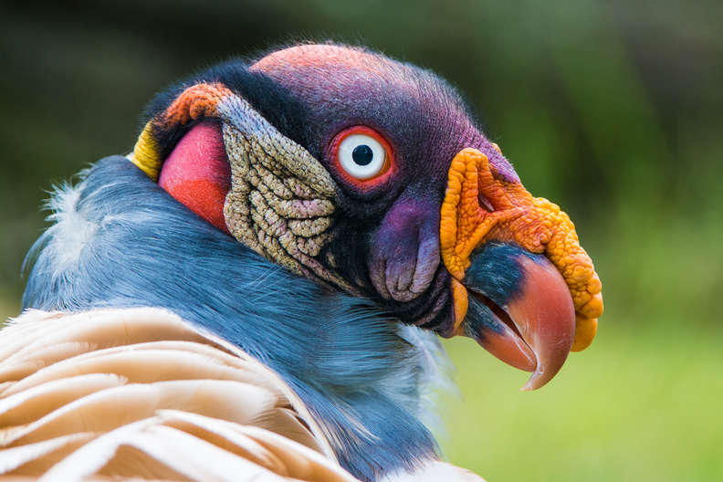

Animais Aéreos Ameaçados
| Foto | Animal | Habitat | Status |
|---|---|---|---|
| Arara-Azul | Pantanal | Vulnerável | |
 |
Harpia | Amazônia | Quase Ameaçada |
 |
Papagaio-de-Peito-Roxo | Mata Atlântica | Em Perigo |
 |
Águia-Cinzenta | Mata Atlântica | Em Perigo |
 |
Ararajuba | Amazônia | Vulnerável |
 |
Mutum-do-Sudeste | Mata Atlântica | Em Perigo |
 |
Urubu-Rei | Florestas Tropicais | Monitoramento |
 |
Tucano-Toco | Cerrado | Monitoramento |